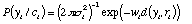
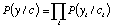
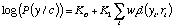
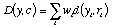
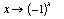
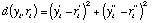

À chaque instant, le décodeur doit estimé pour une séquence y=(yi) reçue quelle est la séquence codée c=(ci) correspondante. En pratique, chaque yi représente deux échantillons de signal pris après désentrelacement. On exprime yi sous la forme yi=ri+bi, où bi représente le bruit et ri l'élément de signal.
Les imperfections du signal sont modélisées par un processus aléatoire gaussien supposé i.i.d.
Lorsque le bruit n'est pas négligeable, le signal reçu présente un écart avec le signal putatif émis, que nous mesurons par la distance euclidienne.
Le calcul de la probabilité P(yi/ci) donne alors:

Le décodage de l'observation y suivant le critère du maximum de vraisemblance consiste à choisir la séquence codée c* a posteriori la plus probable. Dans le cas où tous les messages (c'est-à-dire toutes les séquences codées) sont a priori équiprobables, ceci revient à maximiser suivant c la quantité P(y/c).
Le canal étant sans mémoire, cette probabilité s'écrit:

On se place dans le cas gaussien, et on remplace chaque terme P(yi/ci) par son expression en fonction de la distance d(yi,ri).En prenant le logarithme des deux membres, on obtient une expression du type suivant:

Il est alors clair que le décodage au maximum de vraisemblance revient à minimiser une distance entre le mot reçu y et les séquences codées c. Cette distance peut s'exprimer de la façon suivante:

Elle est donc additive suivant les différentes parties qui composent les séquences.
En régime stationnaire , c'est-à-dire pour i>l, on note qu'à chaque noeud du graphe arrivent (et partent) deux branches correspondant à deux états possibles (ui-1=0 ou ui-1=1). On désignera par Pred(s) l'ensemble des états s' précédant l'état s. Chaque branche du treillis représente une transition entre états s' et s de l'automate de codage. Elle peut être étique tée par une double information: la séquence binaire d'entrée u[s',s] et le vecteur des éléments de signaux de sorties r[s',s] du codeur-modulateur.
Pour établir le chemin optimal entre les instants 0 et Imax, on va estimer, à chaque instant j, les chemins optimaux entre le noeud d'origine (i=0,s0) et tous les noeuds (j,s), s appartenant à S. Cette estimation peut être faite récursivement en réactualisant à chaque instant j un tableau de métriques M[s] qui contient la plus petite distance entre la séquence reçue (y0,y1,...,yj) et un chemin aboutissant au noeud (j,s). Il faut de même garder trace dans un tableau Path[s] du meilleur chemin (identifié par un séquence d'entrée u) aboutissant à ce noeud.
On obtient alors l'algorithme de Viterbi:
Pour i=0 à Imax faire
{
Pour chaque état s de S faire
{
Mnew[s]=Min (Mold[s']+wid(yi,r[s',s])) pour s' appartenant à Pred(s);
soit s'* un état minimisant
Pathnew[s]=concat (Pathold[s'*],u[s'*,s]);
}
Mold <-Mnew
Pathold<-Pathnew
}
Les imperfections du canal sont modélisées par un processus aléatoire gaussien supposé i.i.d. (variables aléatoires indépendantes et identiquement distribuées). Chaque couple bi=(bi',bi'') est ainsi un vecteur aléatoire normal centré, de matrice de covariance diagonale, bi=N(0,siI2).Avec ces notations &&&ECIRC;GR&AGRAV&ECIRC;;V&ECIRC;;&AGRAV&ECIRC;;C&UGRAV&ECIRC;;T&&ECIRC;GR&AGRAV&ECIRC;;V&ECIRC;;;/si2 équivaut à un rapport signal sur bruit. Ce modèle intègre une modulation antipodale symbolisé par la correspondance  qui représente d'une manière suffisemment exacte la modulation GMSK. Ce canal à entrée binaire perturbé par un bruit additif blanc gaussien, est parfois désigné par la simple locution "canal binaire gaussien ".
Pour un canal de transmission parfait (c'est-à-dire sans multi-trajet, sans bruit et sans interférence) et en l'absence de distorsion dans les deux émetteurs-récepteurs, bi =0. Dans ce cas idéal, yi est lié d'une manière déterministe au vecteur binaire émis. Lorsque le bruit n'est pas négligeable, il est possible de mesurer un écart d(yi,ri) entre le signal reçu et un signal putatif émis. Sous l'hypothèse gaussienne dans laquelle nous nous plaçons, il est judicieux de considérer la distance euclidienne (ou son carré):

puisqu'elle intervient directement directement dans le calcul de la probabilité, donnée par:
wi=2si2, qui nous permettra d'établir une métrique de décodage.